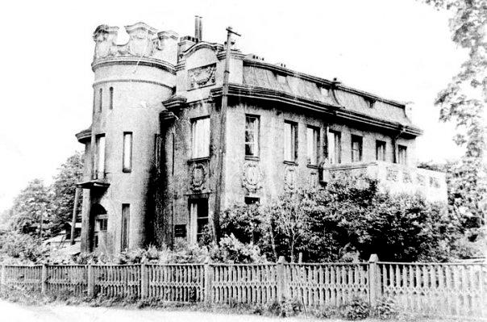
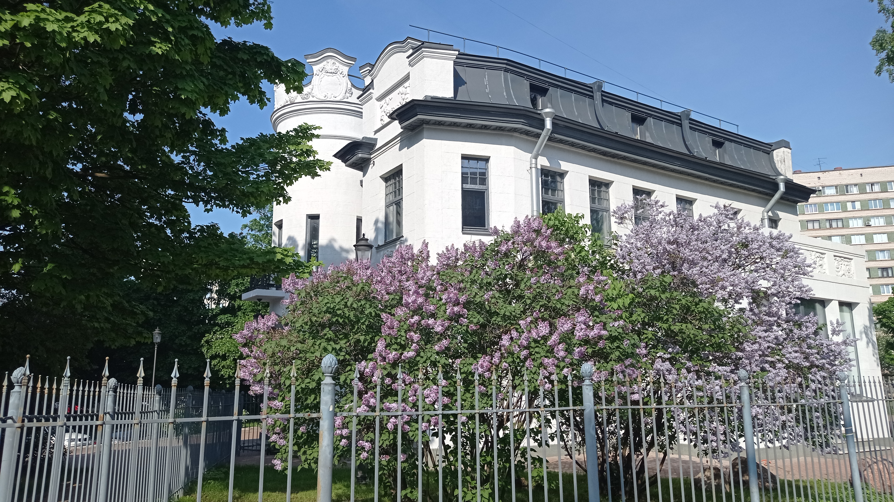

Такое название дом получил по имени купца, для которого архитектор Н. Товстолес построил особняк, явно напоминающий средневековый замок. Быть может, купец любил читать разные рыцарские романы... Во всяком случае, театром он очень увлекался и приглашал к себе различных знаменитых актёров и певцов.
Говорили, что среди них был и Фёдор Иванович Шаляпин. Имена блиставших тогда актёров уже забыты, а о Шаляпине до сих пор помнит каждый, поэтому особняк впоследствии окрестили «домом Шаляпина» — это звучало внушительно и романтично.
Справочник «Историческая застройка Санкт-Петербурга» сообщает следующую информацию об этом достопримечательном месте:
А впоследствии в национализированном особняке расположилась библиотека им. Серафимовича. Во время блокады сюда приходили читатели, не столько для того, чтобы сдать и получить новые книги, а чтобы отогреться. Так дом Котлова получил ещё одно неофициальное название — «Огонёк в Лесном».
С семидесятых годов здесь располагалась уже не библиотека, а строительное управление № 6 треста «Лендорстрой-2».